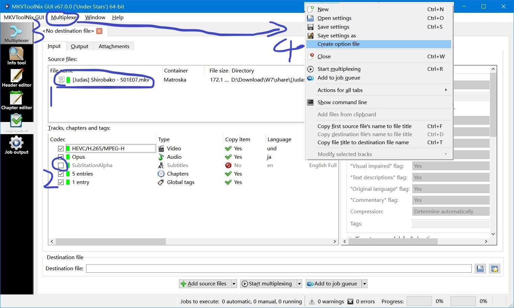

使用mkvtoolnix批量去除mkv格式视频外挂字幕
前提
视频文件内容必须统一，一般是剧集类的，并且要是mkv格式的
打开mkvtoolnix，选择某一个视频文件，找到不要的字幕轨道取消选择，导出options.json到视频所在文件夹

编辑options.json
删除跟刚才导入文件有关的参数
"--track-name",
"1:[Judas] JAP Stereo (Opus 112Kbps)",
"(",
"D:\\path\\[Judas] Shirobako (Season 1 + OVAs) [BD 1080p][HEVC x265 10bit][Eng-Subs]\\[Judas] Shirobako - S01E07.mkv",
")",
下载下面的脚本到视频所在文件夹，并修改里面的mkvmerge.exe位置，启动脚本即可
https://raw.githubusercontent.com/Serede/mkvtoolnix-batch/master/mkvtoolnix-batch.bat
Updated: 2023-04-29 23:41
Created: 2023-04-25 20:00